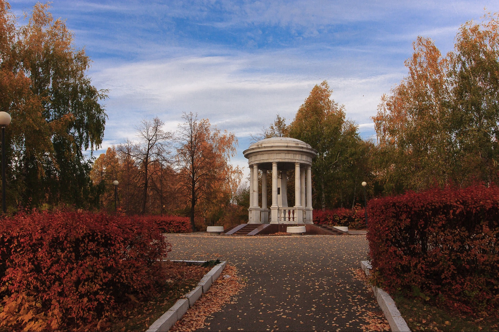

Парк Винновская роща в Ульяновске расположен в Железнодорожном районе города.
Это — живописный уголок природы на берегу реки Волга, расположенный на территории бывшего имения помещиков Киндяковых.
С 1960 года роща входит в состав лесопарка имени И.А.Гончарова и является памятником природы города Ульяновска.
Парк культуры и отдыха Винновская роща в Ульяновске был открыт в активной зоне лесного массива в 1966 году.
Это историческое место, связанно с именем известного русского писателя Ивана Александровича Гончарова, который очень любил киндяковскую усадьбу, ее рощу и обрыв к Волге.Именно в Киндяковке у писателя созрел замысел романа «Обрыв», там он написал некоторые главы из него.
22 июля 1918 года на этом месте проходили жестокие бои с белогвардейцами, стремившимися захватить Симбирск, так ранее назывался город Ульяновск.
Во время Великой Отечественной войны в Винновской роще размещалась зенитная батарея, защищавшая железнодорожную станцию Киндяковка и мост через Волгу от налетов немецкой авиации.
Достопримечательностями современного парка Винновская роща в Ульяновске являются остатки двух склепов из красного кирпича, построенные в начале ХХ века по приказу последней владелицы Винновки симбирской помещицы Е. М. Перси-Френч.
Они предназначались для захоронения в них самой хозяйки и ее подруги — компаньонки Джейн Томкинс. К настоящему моменту свод погребальной камеры частично обрушен, а сама камера залита водой.Другой достопримечательносью парка считается мемориальная беседка И. А. Гончарова, открытая в 1912 году на 100-летний юбилей писателя.
Памятник был выполнен по проекту архитектора А.Шоде.